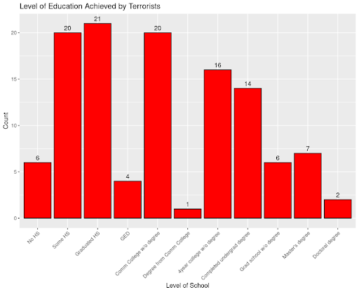
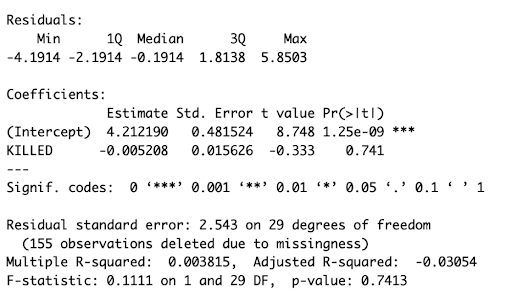

DENISON UNIVERSITY · DATA ANALYTICS PROJECT
Terrorism Dataset Analysis
Exploring characteristics, behaviors, and attack patterns among lone offender terrorists and mass murderers using data wrangling, statistical testing, regression, and data visualization.
01 · THE QUESTION
What are the main characteristics of lone offender terrorists and mass murderers?
The goal of this project was to explore common characteristics, behaviors, experiences, and attack patterns among lone offender terrorists and mass murderers in the United States.
We examined factors including demographics, education, attack type, military experience, religion, criminal history, and other behavioral characteristics to identify patterns within the data.
02 · THE DATA
A dataset containing 151 characteristics across 186 offenders.
The dataset was obtained from the U.S. Department of Justice through Data.gov and examines behavioral characteristics of lone offender terrorists and mass murderers in the United States.
The observations cover offenders operating between 1990 and 2013 and include developmental, behavioral, ideological, and sociodemographic factors.
186
Offenders
151
Factor variables
1990–2013
Years covered
03 · DATA WRANGLING
Turning the original dataset into analysis-ready variables.
Many variables contained category descriptions alongside numeric codes, while special values were also used to represent unknown observations. The data needed to be transformed before analysis.
01
Extract
Used str_extract() to isolate numeric values from variables containing both numbers and category labels.02
Transform
Used mutate() to create cleaned numeric variables that could be used for statistical analysis and visualization.03
Clean
Re-coded values of 88 and 99, which represented unknown observations, as missing values to prevent them from distorting summaries and visualizations.04 · EXPLORATORY ANALYSIS
Exploring education and attack patterns within the data.
Before conducting statistical tests, we used visualizations to explore the distribution of offender characteristics and identify patterns worth investigating further.

Distribution of education levels represented in the offender dataset.

Comparison of attack types between lone offender terrorists and mass casualty offenders.
05 · STATISTICAL TESTING
Testing whether observed differences were statistically meaningful.
We applied multiple statistical methods to investigate relationships between offender characteristics. These included t-tests, ANOVA, and chi-square testing.

Distribution of age at first act. The overall mean was approximately 34.7 years and the median was 34.

T-test examining differences in age at first act between groups in the dataset.
06 · REGRESSION ANALYSIS
Did military experience relate to the number of people killed?
We used bivariate linear regression to examine the relationship between years of military experience and the total number of people killed.
The analysis did not provide evidence of a statistically significant relationship between the two variables. This was an important result because it demonstrated that not every apparent or expected relationship in the dataset was supported statistically.

Bivariate regression examining years of military experience and total number of people killed.
07 · KEY FINDINGS
Statistical testing helped separate patterns from unsupported relationships.
The analysis revealed several patterns within the offender data while also showing that some characteristics had little statistical relationship with the outcomes we examined.
The dataset was heavily male dominated, and the observed mean age of first act differed between males and females. Exploratory analysis also showed differences in attack types across offender groups and patterns in educational attainment.
Other analyses did not produce statistically significant evidence. In particular, the regression did not support a relationship between years of military experience and the total number of people killed.
08 · LIMITATIONS
The results should be interpreted within the limits of the dataset.
The dataset contained only 186 offenders and was limited to United States-based cases between 1990 and 2013. Because of this scope, the results should not be treated as representative of all terrorism or mass casualty events.
The data was also constructed using publicly available information about identifiable offenders, creating potential data quality and ethical limitations. Certain categories of mass violence were not included in the dataset.
These limitations reinforced the importance of interpreting statistical findings in the context of how the underlying data was collected and defined.
09 · WHAT I LEARNED
Working through the full statistical analysis process.
This project gave me experience taking a large, messy dataset through data wrangling, exploratory analysis, statistical testing, regression, visualization, and final communication.
I strengthened my skills in R while learning how to select statistical methods based on the question being asked and how to interpret both statistically significant and insignificant results.
Most importantly, I learned that a useful analysis is not about forcing every test to produce a significant result. Understanding when the data does not support a relationship can be just as important as finding one that it does.
← Back to Projects